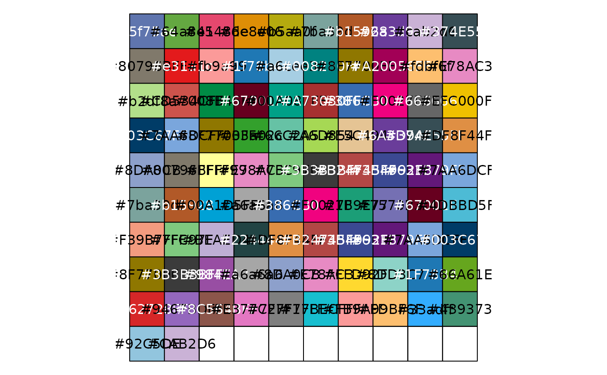
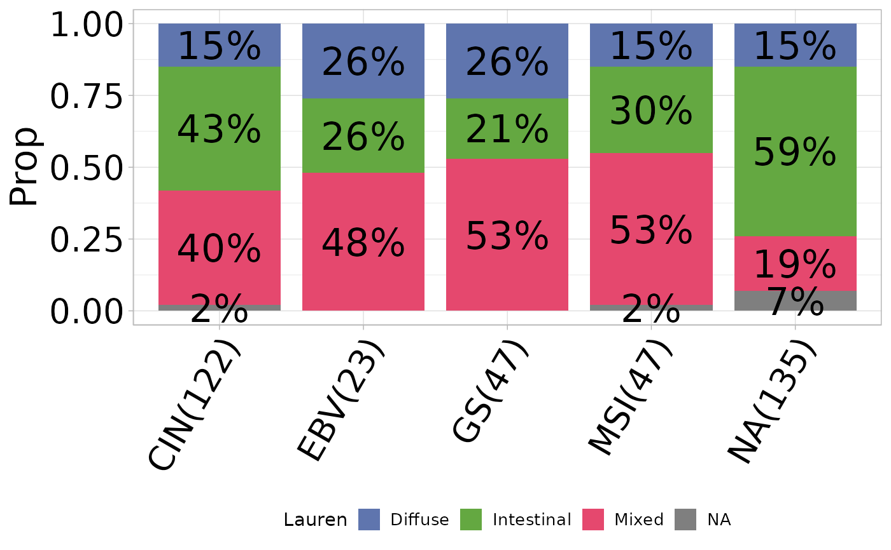

Generates a bar plot visualizing the percentage distribution of a variable grouped by another variable.
Usage
percent_bar_plot(
input,
x,
y,
subset.x = NULL,
color = NULL,
palette = NULL,
title = NULL,
axis_angle = 0,
coord_flip = FALSE,
add_Freq = TRUE,
Freq = NULL,
size_freq = 8,
legend.size = 0.5,
legend.size.text = 10,
add_sum = TRUE,
print_result = TRUE,
round.num = 2
)Arguments
- input
Input data frame.
- x
Name of the x-axis variable.
- y
Name of the y-axis (grouping) variable.
- subset.x
Optional subset of x-axis values.
- color
Optional color palette.
- palette
Optional palette type.
- title
Optional plot title.
- axis_angle
Angle for axis labels (0-90). Default is 0.
- coord_flip
Logical to flip coordinates. Default is FALSE.
- add_Freq
Logical to add frequency count. Default is TRUE.
- Freq
Name of frequency column.
- size_freq
Size of frequency labels. Default is 8.
- legend.size
Size of legend. Default is 0.5.
- legend.size.text
Size of legend text. Default is 10.
- add_sum
Logical to add sum to x-axis labels. Default is TRUE.
- print_result
Logical to print result data frame. Default is TRUE.
- round.num
Decimal places for proportion. Default is 2.
Examples
sig_stad <- load_data("sig_stad")
percent_bar_plot(
input = sig_stad, x = "Subtype", y = "Lauren",
axis_angle = 60
)
#> # A tibble: 18 × 5
#> # Groups: Subtype [5]
#> Subtype Lauren Freq Prop count
#> <fct> <fct> <dbl> <dbl> <dbl>
#> 1 CIN Diffuse 18 0.15 122
#> 2 CIN Intestinal 53 0.43 122
#> 3 CIN Mixed 49 0.4 122
#> 4 CIN NA 2 0.02 122
#> 5 EBV Diffuse 6 0.26 23
#> 6 EBV Intestinal 6 0.26 23
#> 7 EBV Mixed 11 0.48 23
#> 8 GS Diffuse 12 0.26 47
#> 9 GS Intestinal 10 0.21 47
#> 10 GS Mixed 25 0.53 47
#> 11 MSI Diffuse 7 0.15 47
#> 12 MSI Intestinal 14 0.3 47
#> 13 MSI Mixed 25 0.53 47
#> 14 MSI NA 1 0.02 47
#> 15 NA Diffuse 20 0.15 135
#> 16 NA Intestinal 80 0.59 135
#> 17 NA Mixed 26 0.19 135
#> 18 NA NA 9 0.07 135
#> ℹ Available categories: box, continue2, continue, random, heatmap, heatmap3, tidyheatmap
#> ℹ Random palettes: 1 (palette1), 2 (palette2), 3 (palette3), 4 (palette4)
#> [1] "'#5f75ae', '#64a841', '#e5486e', '#de8e06', '#b5aa0f', '#7ba39d', '#b15928', '#6a3d9a', '#cab2d6', '#374E55FF', '#80796BFF', '#e31a1c', '#fb9a99', '#1f78b4', '#a6cee3', '#008280FF', '#8F7700FF', '#A20056FF', '#fdbf6f', '#E78AC3', '#b2df8a', '#CD534CFF', '#008B45FF', '#67001F', '#00A087FF', '#A73030FF', '#386CB0', '#F0027F', '#666666', '#EFC000FF', '#003C67FF', '#7AA6DCFF', '#8F7700FF', '#33a02c', '#66C2A5', '#A6D854', '#E5C494', '#6A3D9A', '#374E55FF', '#DF8F44FF', '#8DA0CB', '#80796BFF', '#FFFF99', '#E78AC3', '#7FC97F', '#3B3B3BFF', '#B24745FF', '#3B4992FF', '#631879FF', '#7AA6DCFF', '#7ba39d', '#b15928', '#00A1D5FF', '#a6a6a6', '#386CB0', '#F0027F', '#1B9E77', '#7570B3', '#67001F', '#4DBBD5FF', '#F39B7FFF', '#7FC97F', '#BEAED4', '#224444', '#DF8F44FF', '#B24745FF', '#3B4992FF', '#631879FF', '#7AA6DCFF', '#003C67FF', '#8F7700FF', '#3B3B3BFF', '#984EA3', '#a6a6a6', '#8DA0CB', '#E78AC3', '#FFD92F', '#8DD3C7', '#1F78B4', '#66A61E', '#D62728FF', '#9467BDFF', '#8C564BFF', '#E377C2FF', '#7F7F7FFF', '#17BECFFF', '#FB9A99', '#FDBF6F', '#33adff', '#439373', '#92C5DE', '#CAB2D6'"


